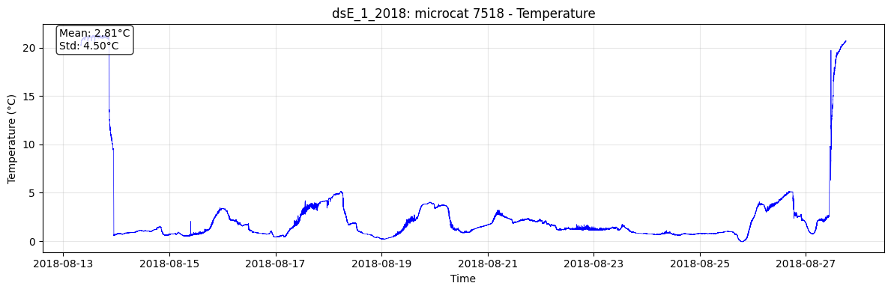

Demo: instrument-level processing
This notebook walks through the instrument-level processing in the oceanarray code.
[1]:
from pathlib import Path
import numpy as np
import xarray as xr
import numpy as np
from oceanarray import readers, rodb, instrument, plotters, tools, writers, convertOS
import pandas as pd
Stage 0 & 1: Already taken place
Assume the output is now data/wb1_12_2015_6123.raw.
[2]:
data_dir = Path(".." ,"data")
input_file = 'wb1_12_2015_6123.raw'
ds = rodb.rodbload(data_dir / input_file)
ds
[2]:
<xarray.Dataset> Size: 837kB
Dimensions: (TIME: 11622)
Coordinates:
N_MEASUREMENTS (TIME) int64 93kB 0 1 2 3 4 ... 11618 11619 11620 11621
* TIME (TIME) datetime64[s] 93kB 2015-11-30T11:00:00 ... 2017-03...
Data variables:
YY (TIME) float64 93kB 2.015e+03 2.015e+03 ... 2.017e+03
MM (TIME) float64 93kB 11.0 11.0 11.0 11.0 ... 3.0 3.0 3.0 3.0
DD (TIME) float64 93kB 30.0 30.0 30.0 30.0 ... 28.0 28.0 28.0
HH (TIME) float64 93kB 11.0 12.0 13.0 14.0 ... 14.0 15.0 16.0
T (TIME) float64 93kB 21.43 21.93 22.17 ... 8.278 22.91 21.99
C (TIME) float64 93kB 0.0113 0.0114 0.0114 ... 53.31 0.1953
P (TIME) float64 93kB -0.7 -0.7 -0.7 -0.8 ... 802.0 114.7 -0.4
InstrDepth float64 8B 800.0
Latitude float64 8B 26.5
Longitude float64 8B -76.81
Attributes:
mooring: wb1_12_2015
serial_number: 6123
water_depth: 1401
source_file: ../data/wb1_12_2015_6123.raw
columns: ['YY', 'MM', 'DD', 'HH', 'T', 'C', 'P']Stage 2: Trim to deployment period
Show the *.raw file, and then trim (iteratively) to the deployment period, using plotting
[3]:
ds2, dstart, dend = instrument.stage2_trim(ds)
print("Deployment start:", dstart)
print("Deployment end:", dend)
fig = plotters.plot_microcat(ds2)
Deployment start: 2015-11-30T11:00:00
Deployment end: 2017-03-28T16:00:00

[4]:
dstart, dend = instrument.trim_suggestion(ds)
fig, ax = plotters.plot_trim_windows(ds, dstart, dend)
Suggested deployment start: 2015-11-30T19:00:00
Suggested deployment end: 2017-03-28T14:00:00

[5]:
dstart = np.datetime64('2015-11-30T19:00:00')
dend = np.datetime64('2017-03-28T14:00:00')
ds2, dstart, dend = instrument.stage2_trim(ds, deployment_start=dstart, deployment_end=dend)
print("Deployment start:", dstart)
print("Deployment end:", dend)
fig = plotters.plot_microcat(ds2)
Deployment start: 2015-11-30T19:00:00
Deployment end: 2017-03-28T14:00:00

Stage 3: Apply calibrations + corrections
[6]:
ds_cal = instrument.apply_microcat_calibration_from_txt(data_dir / 'wb1_12_2015_005.microcat.txt', data_dir / 'wb1_12_2015_6123.use')
ds_cal
[6]:
<xarray.Dataset> Size: 836kB
Dimensions: (TIME: 11612)
Coordinates:
N_MEASUREMENTS (TIME) int64 93kB 0 1 2 3 4 ... 11608 11609 11610 11611
* TIME (TIME) datetime64[s] 93kB 2015-11-30T19:00:00 ... 2017-03...
Data variables:
YY (TIME) float64 93kB 2.015e+03 2.015e+03 ... 2.017e+03
MM (TIME) float64 93kB 11.0 11.0 11.0 11.0 ... 3.0 3.0 3.0 3.0
DD (TIME) float64 93kB 30.0 30.0 30.0 30.0 ... 28.0 28.0 28.0
HH (TIME) float64 93kB 19.0 20.0 21.0 22.0 ... 12.0 13.0 14.0
T (TIME) float64 93kB 7.859 7.854 7.846 ... 8.293 8.291 8.278
C (TIME) float64 93kB 36.59 36.58 36.57 ... 37.02 37.01 37.0
P (TIME) float64 93kB 822.0 824.1 825.3 ... 800.0 799.9 800.0
InstrDepth float64 8B 800.0
Latitude float64 8B 26.5
Longitude float64 8B -76.81
Attributes:
mooring: wb1_12_2015
serial_number: 6123
water_depth: 1401
start_time: 2015/11/30T19:00
end_time: 2017/03/28T14:00
source_file: ../data/wb1_12_2015_6123.use
columns: ['YY', 'MM', 'DD', 'HH', 'T', 'C', 'P']
calibration_log: ../data/wb1_12_2015_005.microcat.txt
comment: Calibration offsets applied from microcat log file.[7]:
fig = plotters.plot_microcat(ds_cal)

[8]:
ds_diff = tools.calc_ds_difference(ds_cal, ds2)
fig = plotters.plot_microcat(ds_diff)
fig.suptitle("difference between *.use and *.microcat")
[8]:
Text(0.5, 0.98, 'difference between *.use and *.microcat')

Stage 4: Convert to OceanSites format
[9]:
metadata_txt = data_dir / 'wb1_12_2015_6123.use'
config_dir = Path("..") / "oceanarray" / "config"
var_map_yaml = config_dir / "OS1_var_names.yaml"
vocab_yaml = config_dir / "OS1_vocab_attrs.yaml"
sensor_yaml = config_dir / "OS1_sensor_attrs.yaml"
project_yaml = config_dir / "project_RAPID.yaml"
ds_OS = convertOS.convert_rodb_to_oceansites(ds_cal, metadata_txt, var_map_yaml, vocab_yaml, sensor_yaml=sensor_yaml,project_yaml=project_yaml)
[10]:
ds_OS
[10]:
<xarray.Dataset> Size: 557kB
Dimensions: (TIME: 11612, DEPTH: 1)
Coordinates:
* TIME (TIME) datetime64[s] 93kB 2015-11-30T19:00:00 ... 2017-0...
* DEPTH (DEPTH) float64 8B 800.0
LATITUDE (TIME) float64 93kB 26.5 26.5 26.5 26.5 ... 26.5 26.5 26.5
LONGITUDE (TIME) float64 93kB -76.81 -76.81 -76.81 ... -76.81 -76.81
Data variables:
TEMP (TIME, DEPTH) float64 93kB 7.859 7.854 ... 8.291 8.278
CNDC (TIME, DEPTH) float64 93kB 36.59 36.58 36.57 ... 37.01 37.0
PRES (TIME, DEPTH) float64 93kB 822.0 824.1 ... 799.9 800.0
InstrDepth (DEPTH) float64 8B 800.0
SENSOR_CTD_6123 int64 8B 800
Attributes: (12/57)
site_code: RAPID
platform_code: wb1
deployment_code: 12_2015
data_mode: P
title: Time series from wb1_12_2015, instrume...
theme: Transport Moored Arrays
... ...
QC_indicator: None
serial_number: 6123
water_depth: 1401
source_file: ../data/wb1_12_2015_6123.use
columns: ['YY', 'MM', 'DD', 'HH', 'T', 'C', 'P']
calibration_log: ../data/wb1_12_2015_005.microcat.txt[11]:
filepath = writers.save_OS_instrument(ds_OS, data_dir)
print(filepath)
../data/OS_wb1_12_2015_6123_P.nc